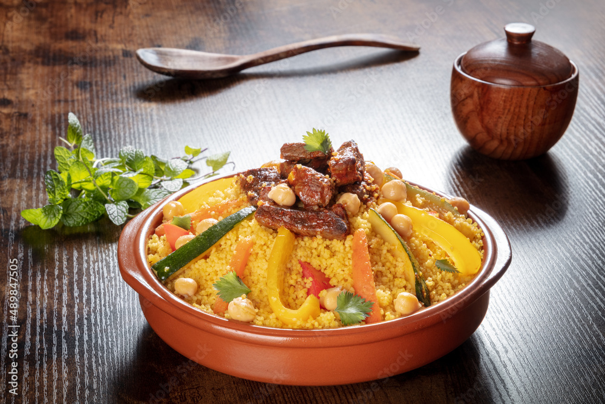

CossCoss Marocain

Description
Le couscous est servi le plus souvent avec un ragoût de légumes accompagné de viande, présenté parfois dans un plat en terre cuite traditionnel à tajine. Le plat de base consiste en l'association du couscous (céréale) et d'un apport protéinique, viande, poisson ou pois chiches (légumineuse jouant le rôle de l'apport protéinique).
Il peut aussi être consommé seul, aromatisé ou nature, chaud ou froid, comme dessert avec du sucre ou plat d'accompagnement.
Ingredients
- Semoule de couscous (grosse ou moyenne)
- Eau
- Sel
- Viande
- Oignons
- Tomates
- Carottes
- Navets
- Courgettes
- Pois chiches
- Huile d'olive
- Coriandre fraîche et/ou persil frais, hachés finement
- Épices : gingembre, curcuma, paprika, cannelle, cumin, safran (ou colorant alimentaire), poivre noir, sel.
-
Steps
- Préparation du bouillon :
Mettre l'huile dans la marmite à couscoussier, faire chauffer puis ajouter la viande coupée en gros morceaux.
Incorporer les deux oignons coupés en grosses lamelles, le bouquet de persil, les épices et mélanger. Faire saisir quelques instants, il faut que la viande colore légèrement mais pas trop, contrairement au tajine.
- Ajouter les pois-chiche et le poivron piquant.
Astuce : tremper les pois- chiche la veille dans de l'eau du robinet tiède environ une nuit. Le lendemain égoutter puis mettre dans un grand sac et le place au congélateur jusqu'au moment voulu.
Mélanger, puis arroser d'eau en couvrant généreusement toute la viande. Couvrir et laisser cuire le temps de préparer les légumes et la semoule.
- Pendant ce temps, nettoyer et éplucher les légumes, les couper en gros morceaux.
Par exemple : la carotte et la courgette une fois dans le sens de la largeur puis une fois dans le sens de la longueur. La pomme de terre et le navet en quatre dans le sens de la longueur, laisser les fèves ainsi, tailler le potiron en moyen morceaux, couper le chou en gros quartiers .
- Dès que la viande est à moitié fondante et se détache de l'os. Ajouter le navet et la carotte, comptez 15 minutes puis ajouter le reste de légumes, compter un temps de cuisson de 15 minutes.
Le potiron est cuit à part dans une casserole avec une louche de bouillon et une louche d'eau.
Goûter et rectifier l'assaisonnement.
- Préparation de la semoule à couscous :
Dans un très grand saladier, mettre le couscous, le sel et un bon filet d'huile d'olive.
Mélanger au doigts (et non à la main entière) pour enduire les graines. Arroser de peu d'eau petit à petit tout en mélangent.
On hydrate ainsi le couscous, sans cela il serait sec et ne cuirait pas.
Les graines se détachent, roulent et ont un effet mouillé.
Placer ensuite la semoule à couscous dans le haut du couscoussier réchauffé au préalable sur le bouillon.
Luter les deux parties du couscoussier à l'aide d'un joint ou à défaut à l'aide d'un sachet en plastique roulé ou un torchon.
Vous pouvez soit couvrir le couscous soit le laisser ainsi.
- Après quelques minutes de cuisson (15 minutes environ), retirer le couscous et placer dans un grand plat.
Asperger d'un peu d'eau et mélanger à l'aide d'une cuillère en bois ou vos mains pour aérer les graines.
Remettre dans le haut du couscousier et répéter l'opération 3 à 5 fois au bout de 15 à 20 minutes, dès que le coucous est cuit. N'hésitez pas à le goûter. A la dernière étape, ajouter 1/4 c. à café de Smen ou de beurre rance pour parfumer et donner un subtil goût.
Astuce : arroser votre couscous d'une petite louchette de bouillon et mélanger, il va ainsi s'imprégner de toutes les saveurs.
- Pour le dressage :
Mettre en dôme le coucous dans un grand plat creux. Faire un puits au centre. Arroser tout le couscous de bouillon, compter environ 3 bonnes louches.
Placer la viande au centre, décorer de légumes de manière homogène : une carotte, une courgette, une pomme de terre... Terminer par le potiron et les pois-chiches. Arroser de nouveau de bouillon. Disposer le reste de bouillon dans un bol pour se servir à table.
Servir aussitôt, très chaud. Déguster avec de la Harissa, du lait fermenté ou caillé.
Il se peut que l'on vous serve le couscous avec des raisins frais ou de la pastéque coupée, ça permet de rafraîchir le palais car le couscous se déguste très chaud.